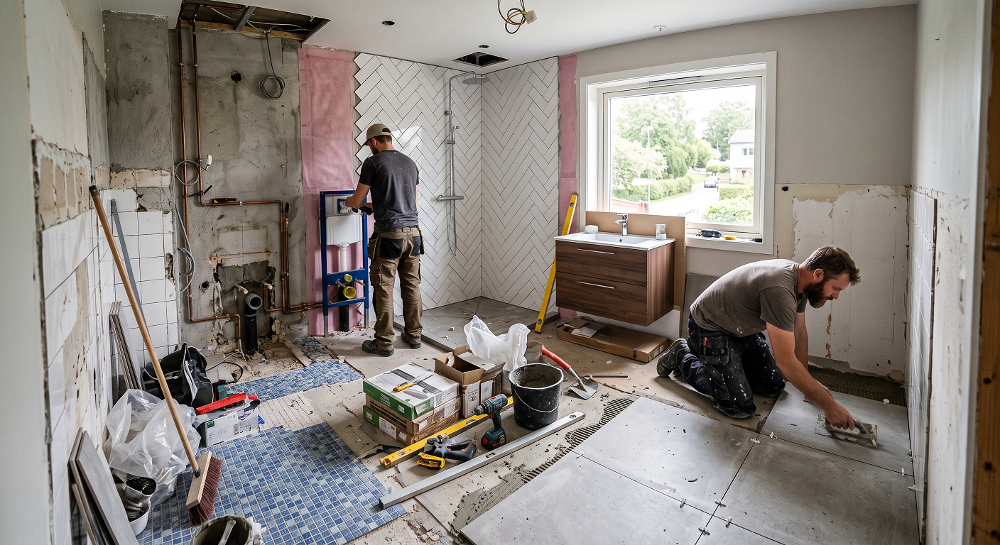
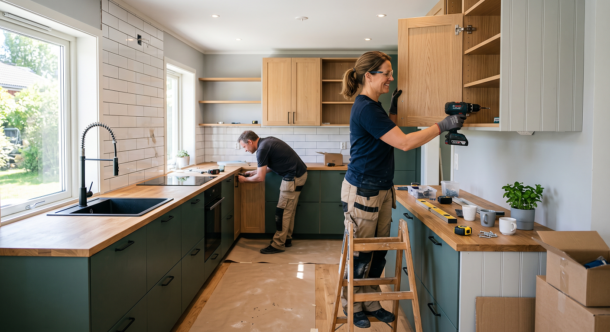
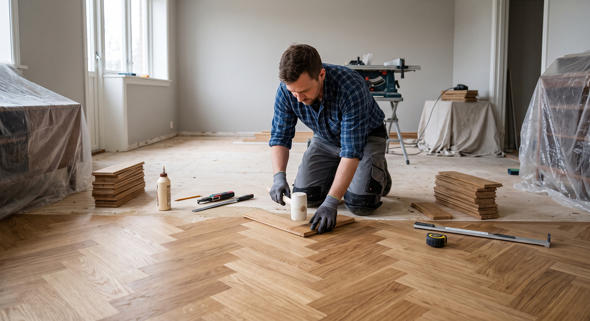
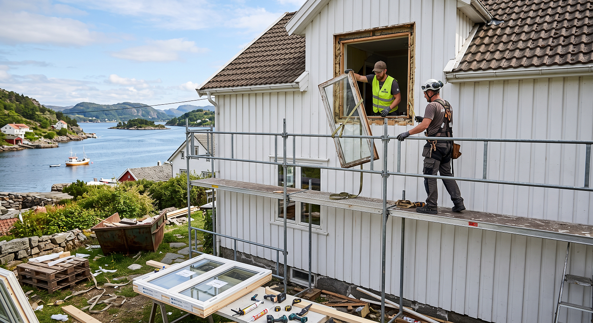

Oppussing

Å pusse opp boligen er en spennende prosess som både øker trivselen og verdien på hjemmet ditt.
Enten du skal fornye et enkelt rom, modernisere kjøkkenet, eller gjennomføre en totalrenovering,
er et godt grunnarbeid avgjørende for et vellykket resultat.
For å sikre at prosjektet går så smidig som mulig, er det noen viktige steg du bør huske på:
God planlegging: Start med å kartlegge behovene.
Finn ut nøyaktig hva som skal gjøres, saml inspirasjon,
og lag en realistisk tidsplan.
Tydelig budsjett: Få oversikt over kostnadene for både materialer og arbeidskraft tidlig.
Det anbefales alltid å inkludere en buffer på 10–15 % for uforutsette utgifter.
Bruk riktige fagfolk: Mens mye overflateoppussing kan gjøres selv, krever arbeid med rør,
våtrom og elektrisitet sertifiserte håndverkere. Dette sikrer at arbeidet er trygt,
lovlig og av høy kvalitet.

Å pusse opp et bad koster i snitt mellom 70 000 og 500 000 kroner,
avhengig av om du gjør en enkel overflateoppussing eller en totalrenovering
Enkel oppussing: Innebærer nye overflater på de gamle, bytte av baderomsmøbler,
toalett eller armaturer. Krever at membran, rør og sluk er i god stand. Pris:
ca. 70 000 – 180 000 kr (avhengig av badets størrelse).
Totalrenovering: Alt rives ned til betong eller stenderverk.
Nye rør, sluk, våtromsmembran, elektrisk anlegg, fliser og innredning
legges opp på nytt. Pris: ca. 200 000 – 600 000+ kr
Hva koster det etter størrelse? (Omtrentlige prisanslag)
5 kvm: Enkel: 70 000 – 100 000 kr | Totalrenovering: 200 000 – 300 000 kr
7 kvm: Enkel: 90 000 – 120 000 kr | Totalrenovering: 250 000 – 400 000 kr
10 kvm: Enkel: 100 000 – 150 000 kr | Totalrenovering: 300 000 – 500 000 kr

Å fornye eller pusse opp kjøkkenet koster typisk mellom 25 000 og 350 000+ kroner.
Prisen og omfanget avhenger helt av om du beholder eksisterende skrog (kjøkkenfornying)
eller river alt for å bygge nytt (totalrenovering).
Enkel kosmetisk fornyelse (Budsjett)
Hva gjøres: Male eksisterende fronter, bytte håndtak/knotter,
legge kontaktplast på benkeplaten, eller male veggene.
Prisanslag: Rundt 5 000 – 15 000 kr
Kjøkkenfornying (Smart gjenbruk)
Hva gjøres: Spesialtilpassede,
nye fronter og skuffemekanismer monteres på gamle skrog.
Ofte byttes også benkeplate, vask og armatur.
Prisanslag: Rundt 25 000 – 100 000 kr
Totalrenovering (Nytt kjøkken)
Hva gjøres: Ny planløsning, nye skrog, nye hvitevarer,
samt endring av rør- og strømpunkter.
Prisanslag: Typisk 100 000 – 350 000+ kr
(avhengig av om du velger flatpakket som IKEA eller skreddersydde løsninger)

Å legge ny parkett koster normalt mellom 350 og 2 000 kroner per kvadratmeter totalt,
avhengig av tretype, kvalitet og om du gjør jobben selv eller leier inn fagfolk.
Siden de fleste moderne parkettgulv bruker klikksystem, velger mange å gjøre jobben selv for å spare penger.
Lamellparkett (Materiale)
Pris per kvadratmeter:400 – 1 300 kr. Standard parkett (ofte eik).
Den mest populære løsningen.
Massivparkett / Heltre
Pris per kvadratmeter: 700 – 2 000 kr. Premium og eksklusivt.
Kan slipes svært mange ganger.
Underlag (Ullpapp/foam)
Pris per kvadratmeter: 20 – 60.
Demper trinnlyd og hindrer knirk
Håndverker (Kun arbeid)
Pris per kvadratmeter: 250 – 370 kr.
Pris for selve leggingen og listing per kvm.
Eventuell avretting
Pris per kvadratmeter: 100 – 300 kr.
Kun nødvendig dersom undergulvet er ujevnt.

Å skifte ut gamle vinduer koster i gjennomsnitt mellom 6 000 og 15 000 kroner
per vindu inkludert montering, men prisen kan variere betydelig basert på størrelse,
materiale og tilgjengelighet. Siden opptil 40 % av boligens varmetap kan skje gjennom gamle vinduer,
er dette et av de mest effektive oppussingstiltakene du kan gjøre for å senke strømregningen.
Prisoversikt etter vindustype (Inkludert montering og mva.)
2-lags standardvindu (PVC/Plast): Ca. 6 000 – 9 000 kr per stykk.
Rimelig og tilnærmet vedlikeholdsfritt.
3-lags energivindu (Tre/Aluminium): Ca. 10 000 – 15 000 kr per stykk.
Gir best isolasjonsevne og krever minimalt med maling utvendig.
Store panoramavinduer / Fastkarm: Ca. 15 000 – 30 000+ kr per stykk.
Selve monteringsjobben (Håndverker): Ligger normalt på rundt 2 500 – 4 000 kr per vindu i ren
arbeidskostnad,
avhengig av om det kreves stillas eller lift.

prisestimat for de ulike utendørsprosjektene basert på gjennomsnittlige markedspriser i 2026.
Alle estimater inkluderer mva., materialer og profesjonelt arbeid (håndverkere).
Kledning (Terrasse/Fasade): 1 800 – 3 500 kr per m².
Prisen gjelder per m² veggflate. Valg av standard gran/furu kontra vedlikeholdsvennlig
Royalimpregnert eller Kebony drar prisen opp.
Link til forhandlere:
Ny Terrasse (Platting): 2 500 – 6 500 kr per m².
Enkel platting på bakken er rimeligst (2500–3500 kr).
Hevet terrasse med fundament og rekkverk ligger øverst i sjiktet.
Link til forhandlere:
Levegg (Bygging): 1 500 – 4 000 kr per meter.
Avhenger av om du kjøper ferdigmoduler eller får tømrer til å plasstøpe/bygge spilevegg fra bunnen
av.
Fundamentering (f.eks. støping i fjell/jord) øker prisen.
Link til forhandlere:
Utvendige Persienner: 4 000 – 9 000 kr per vindu.
Avhenger helt av størrelse og om du velger manuell snorbetjening
eller motorisering/smarthusstyring
Link til forhandlere:
Blomster & Hageanlegg: 700 – 1 100 kr per time.
Typisk timepris for anleggsgartner. Planter, jord, kantstein og eventuell gravemaskinleie
kommer i tillegg.
Link til forhandlere:
Blikkenslager (Beslag/Renner): 800 – 1 200 kr per time.
Gjelder generelt arbeid som montering av takrenner, vindusbeslag eller pipebeslag.
Materialer kommer i tillegg.
Link til forhandlere:
Takbytte (Komplett): 2 000 – 4 500 kr per m².
Snittpris ligger rundt 2 300 kr/m². Prisen styres av taktekke (shingel/papp er rimeligst,
betong/tegl og skifer er dyrest) og om undertaket må byttes.
Link til forhandlere: